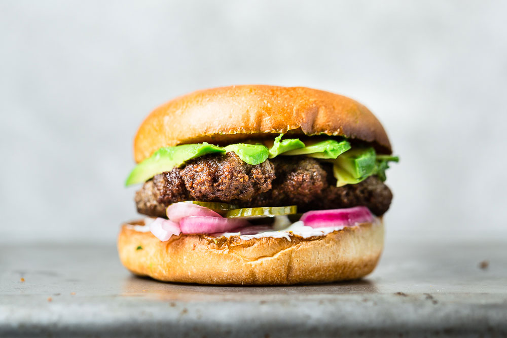

Homepage
Cheeseburger
My recipe for delicious cheeseburgers

I love cheeseburgers, but the main ingredient that I love in this recipe is LAMB. It's the best meat tastewise.
Ingredients
- Burgers buns - 4 buns
- Ground lamb meat - 400g
- American cheese - 4 slices
- Pickles - 2-3 picles
- Red onion - half an onion
- Mayo - 4 tsp
- Butter - just enough to cover the pan in butter
Instructions
- Make patties from the ground lamb meat.
- In a pan, put butter and start cooking the lamb meat until it is golden-brown in color.
- The lamb is going to leave a little bit of fat in the pan.Put the buns in the pan to soak the fat and get crispy.
- Chop the onion and the pickles.
- Put mayo on the bottom and the top bun and add the patties, then add the onion and the pickles.
- Enjoy your burgers. You can put different sauce if you want to, or add tomato instead of pickles.